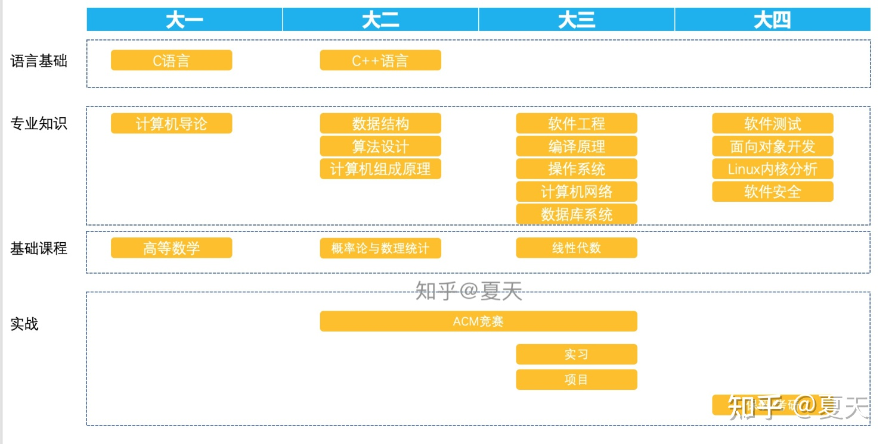

由于电路的特性，计算机能高效正确的自动执行指令，这让人们从繁重的重复机械劳动中解放出来，极大地推动了社会的发展。
最初计算机只能执行预先存好的指令，无法与人实时交互，分时系统的出现解决了这个问题（多个任务快速切换，给人一种实时交互的感觉），让计算机变得更加“聪明”。到了现在，人工智能快速发展，各种模型、算法层出不穷，计算机利用它最强大的本领--计算，发挥人工智能算法的威力，计算机（或者说数学）能做的事超乎人们的想象。
仅仅有计算机只能自己嗨，而计算机+网络能让人们无视距离的相互交流，使得人们的生活、工作便利了不知多少倍，在被窝里拿着手机看剧，多是一件美事。
计算机的强大使得我对计算机专业怀着强烈的好奇心，学习计算机专业，就是了解计算机的硬件和软件原理，培养计算机式思维，熟悉各种数据结构和经典算法，掌握必要的编程语言，从而更好地利用计算机甚至发展计算机。
摸鱼
